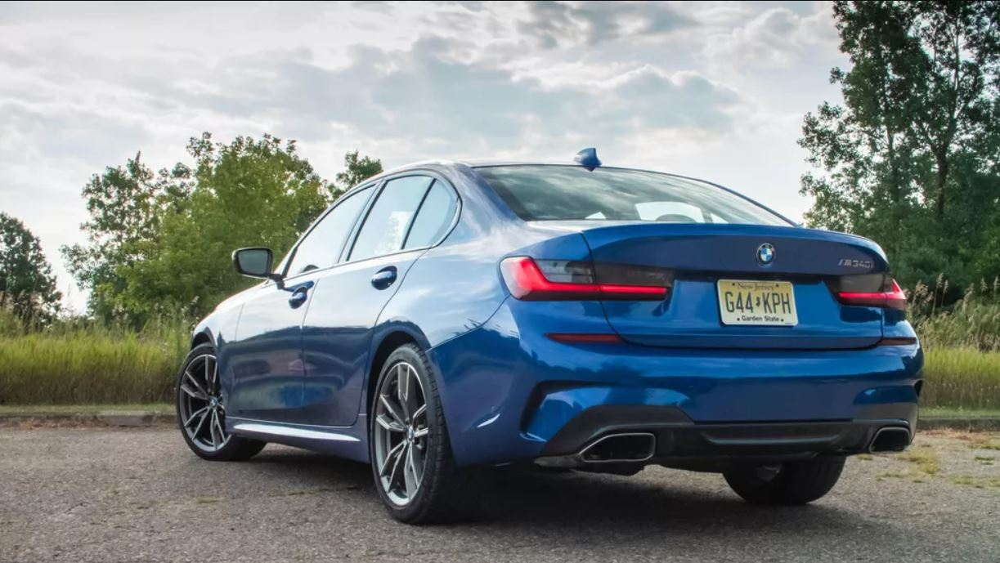
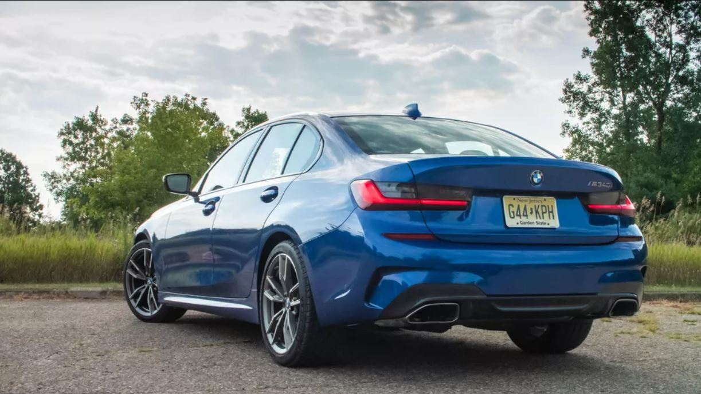
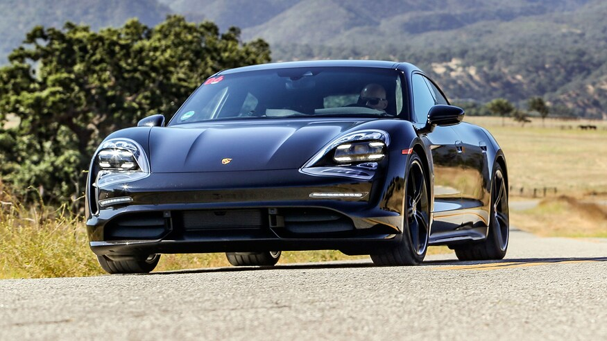
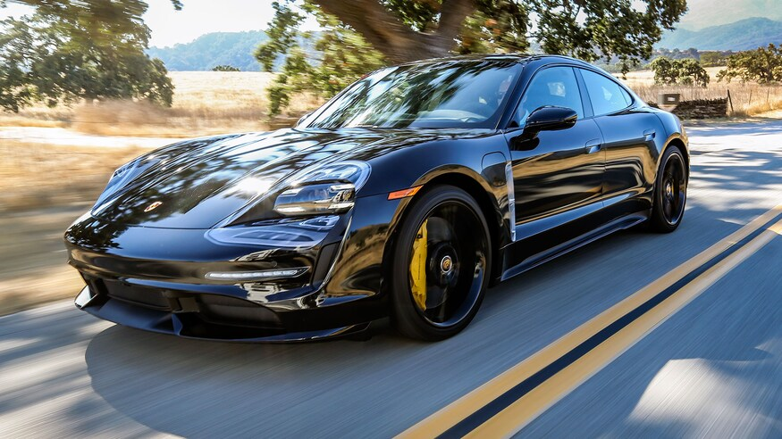
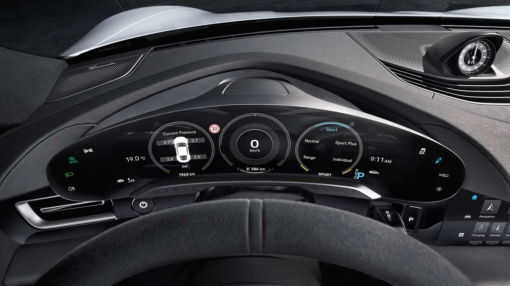
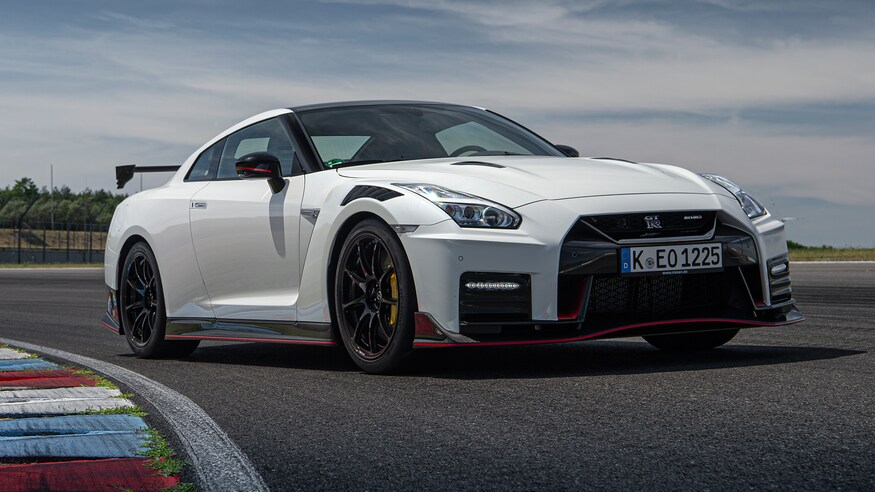
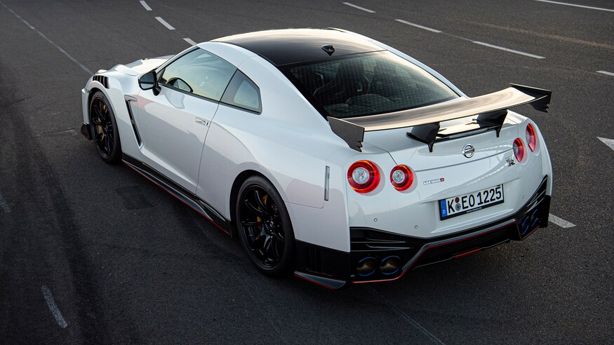

2020 BMW M340i Sedan
How I'd spec it As with many German luxury vehicles, the M340i can get pricey in a hurry if you go too crazy. Case in point, my very well-equipped tester wears a $67,070 price tag, including $995 destination. That's a substantial leap over its $54,000 base price. For my build, I'll begin with the rear-wheel-drive M340i and forego the available $2,000 xDrive all-wheel-drive hardware. I will pay $550 for a Portimao Blue Metallic paint job just like the car pictured here, and $700 for the adaptive suspension to have a wider handling range. To make it winter ready, I'll add the $1,400 Premium Package for a heated steering wheel and front seats, as well as the $300 remote engine start. Add on $875 for the Harman Kardon audio system and $500 for a Wi-Fi hotspot and wireless charge pad, and that brings my ideally spec'd car to $59,320. 2020-bmw-m340i-5 Enlarge Image Be careful with options. Get too out of hand and your M340i could end up costing $67,000 like this one.
 

2020 Porsche Taycan
It's difficult to overestimate the significance of the Porsche Taycan. It's the first electric car from one of the world's most accomplished and acclaimed performance vehicle manufacturers, the product of more than five years' work and an investment of more than $1 billion. It's also the first electric car that will sorely test the loyalties of the Teslarati. This much is clear after an exhilarating ride along some of California's best driving roads with Taycan vehicle line director Robert Meier at the wheel. It took just a handful of corners to realize that Meier, a former Rolls-Royce aerospace engineer who joined Porsche to work on the V-10-powered Carrera GT, is pretty handy behind the wheel of a fast car. And that the Taycan performs and handles … like a real Porsche. We'll wait until we get our hands on a production Taycan before we make final judgement, but this first acquaintance suggests Porsche has created an electric vehicle with impressive performance and handling, and one that's remarkably efficient. Other than saying the e-motors were designed to deliver both power and efficiency, Meier refuses to be drawn on how. But he smiles when I mention feeling what appeared to be gearshift under hard acceleration. Lift off the accelerator, and the Porsche coasts down the road; unlike other EVs, there's no driving strategy where kinetic energy is harvested and sent back to the battery. There is no one-pedal driving mode, or even mild liftoff regen. "We let kinetic energy move the car when possible," Meier admits. "Sending it back to the battery means energy losses because the process cannot be 100 percent efficient." As in the Audi E-Tron, normal braking via the brake pedal is achieved purely by modulating regen to a certain g threshold, above which the calipers start clamping those giant carbon-ceramic rotors. Should Tesla be worried? Absolutely. Even from the passenger seat, it's clear the Porsche is dynamically superior in every way. And if the numbers we've seen hold up under our testing, go-fast Teslas such as the Model S 100D may not have a decisive range advantage over the Taycan, especially when driven hard. Combine that with noticeably better build quality—even on the preproduction car—and the cachet of that Porsche badge, and it all adds up to one thing: The Taycan is a game-changer.
  2020 Nissan GT-R NISMO First Drive
We are not God—or Buddha. So that means we will not be able to reach the goal." Ask Nissan's Hiroshi Tamura—aka Mr. GT-R—about the car that has consumed his life for more than 20 years, and the discussion quickly turns deeply philosophical. The goal in question is perfection, and Tamura-san believes the Nissan's ultimate performance car can never achieve it. But that doesn't stop Godzilla's godfather from trying. The 2020 Nissan GT-R NISMO is a case in point. This latest GT-R NISMO, the third R35 model to carry the storied NISMO badge, is a case study in kaizen, the Japanese art of continuous improvement. And for 2020, the ultimate performance version of Nissan's ultimate performance car gets a swarm of changes that redefine the term "detail." Let's start under the hood. The legendary VR38DETT V-6 has been given two new turbochargers, lifted straight from Nissan's GT3 GT-R race car. These feature 10-vane turbines instead the 11-vane items used previously, and each vane is 0.3mm thinner, reducing the mass of each turbine by 14.5 percent. That means a 24 percent reduction in inertia, which, Tamura says, translates to a 20 percent improvement in engine response from zero to wide-open throttle. The engine makes the same 600 hp at 6,800 rpm and 486 lb-ft from 3,600 rpm to 5,600 rpm as in the previous GT-R NISMO. It just feels livelier doing it. The shift control algorithm for the six-speed dual-clutch transmission has been rewritten to capitalize on the improved throttle response when in automatic mode and to deliver faster downshifts in both auto and manual modes to keep the car better balanced on corner entry. Extensive use of carbon-fiber panels has helped trim nearly 23 pounds from the body structure. The carbon front and rear bumpers and new front fenders—with Porsche 911 GT3 RS-style vents over the wheel arches—together account for 10 pounds of that. The hood, with integrated NACA ducts, is also carbon fiber, saving 4.4 pounds, and a beautifully rendered, handmade carbon-fiber roof panel saves a further 8.8 pounds. Those louvered front fenders not only look good but also help increase front downforce by just over 15 pounds without creating additional drag.
 